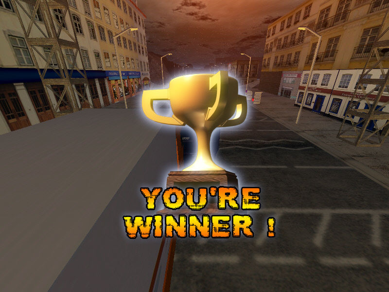

Pook's Pick

Hit or Shit

Batman Vs. Superman


You and three friends walk into your local subway. One gets a tuna sub with mayo and jalapenos. “Looks bretty gud,” you think to yourself. Your other friend goes, “It’s a meatball sub with black olives on deck for your boy.” “Goddamn, that looks tasty,” you think as you lick your lips and pinch your nipples, seemingly aroused by your pal’s taste in subs.
It’s your turn to order. You came in craving a grilled chicken breast sandwich, but your friends are onto something. What do you do?
“I’ll just order all three subs on one! That’ll taste amazing!” Like a modern day Prometheus, you’ve done it. You’ve fucking done it. You’re the big dick in the tight jeans. You took everything good and put it into one!

Then you take a bite.
It takes a long time for ANY movie to get made, not to mention a big name tent-pole movie. In the course of a movie getting made, thousands upon thousands work on them. A writer, a director, the crew, board execs, actors, etc. So among all these people, where was the hero we deserved, but didn’t need right then: quality control?
Much like your friends at Subway, he stood by and said nothing.
I’m gonna preface this review: this movie is a fucking trainwreck. Never have I seen so much incompetence and ignorance shoved into one movie.
So, let’s start with what the movie is SUPPOSED to be about: Superman has just defeated Zod, people are beginning to question if he’s good or bad and if he should be done away with. Among these people is Bruce Wayne, who for reasons not really said all that much (He has too much power? Something like that I guess), wants Supes the fuck outta this solar system.
Not a bad plot. Hell, it might even be good!
HOL UP
HOL THE FUCK UP
NOW JUST HOL UP NOW
!!SPOILERS COMING!!
Okay, so you guys know Marvel is popular? You know how they have like twelve movies spanning nearly a decade of buildup? Well, you wanna see that with DC, too, right?
So let’s introduce: BATMAN, WONDER WOMAN, DOOMSDAY, LEX LUTHOR, FLASH, CYBORG, and AQUAMAN while making references to numerous others, so you know now the DC universe is equal in every way except fucking quality. The movie literally stops to show you three post-credits tier clips of future heroes. I’m not joking.
Now that we’ve covered plot, let’s go with the writing. Have you ever wanted to see Batman lifted up like Jesus by a flock (someone correct me, too lazy to look up what a herd of bats are called) of bats? Have you ever wanted to see a time-travelling Flash interrupt Batman’s dreams? These are just two of the many (ALL cringe worthy) dream sequences. I guess the writers and the director (Zack Snyder, Watchmen, 300) decided that “IF IT’S A DREAM IT DON’T COUNT LOL.” Everyone in my showing audibly guffawed at these pretentious, nonsensical scenes. Mentioning writing: you know Superman’s most well-known villain, Lex Luthor? Bald? Muscular? Intimidating? Here he is:
This is the level of incompetence we are dealing with here. I don’t know where to start on the writing, so I’ll just say this: If you love 9th grade level angst and Philosophy 101 moral debates, you will eat this shit up.
Let’s try to begin to cover what else is wrong: The editing looks like two 9th graders wrote two separate comic books in class one day, realized they wrote two different stories, and tried to throw them together to make one thing. The movie literally jumps everywhere. Characters show up in and out at random. Hell, to be honest, I can’t even tell you why Lex is evil. Fuck, I guess it’s because it’s always been that way.
Now the music. Hans Zimmer is known for his good scores (that, and inventing the “BRMMMMM” we hear in every “epic” trailer) but otherwise, solid work. Here? Let’s try music that doesn’t even fit the scene. Two people talking? Let’s fire up that thrillin’ string section! People fighting? Quick, grab the Power Rangers soundtrack!
Finally (and I do mean finally; I’m tired of writing about this shit), we have the action scenes.
There is one good one, and that’s the Batman vs Superman fight. Everything else looks like a fucking PS2 game, not to mention they had some MTV-level spaz flinging the camera around the battlefield.
Was there anything good? Well, Batfleck is pretty solid and that one fight mentioned above was alright. Other than that? I laughed a lot, so that’s good.
This movie is a whooping TWO HOURS AND THIRTY ONE MINUTES of what seems like three different movies pieced together in movie editor pro: 300 million dollar edition. It takes itself far too seriously, thinks it’s smarter than it is, and its most heinous crime? It basically takes the comics and shits on them. It really is startling how this garbage got made.
Highlights: Batfleck, one fight scene, it ended
Lowlights: editing, “story,” music, far too long, should have been set up like Marvel, not just shoved into one thing
PS: Subway did not pay me
PSS: Subway plz gib gift card